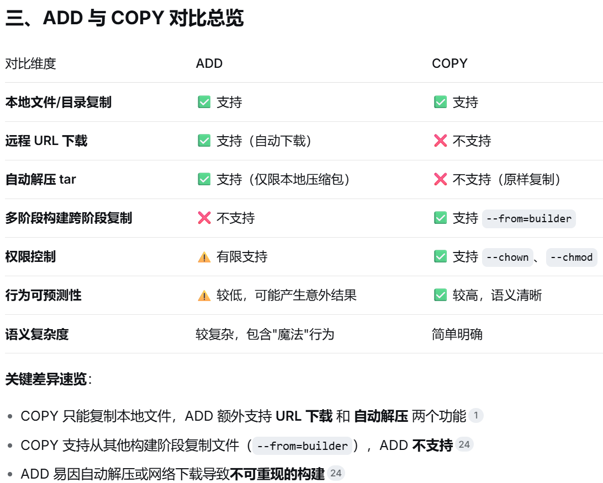

Docker
安装docker¶
- 更新wsl系统：
wsl --update --web-download -
安装Docker：
"Docker Desktop Installer.exe" install --installation-dir=E:\Docker\Desktop --wsl-default-data-root=E:\Docker\DockerDesktopWSL --windows-containers-default-data-root=E:\Docker\Containers，具体参数如下- 指定安装路径：
--installation-dir=install_absolute_dir - 指定镜像存储路径（需与安装路径不同）：
--wsl-default-data-root=wsl_absolute_dir\DockerDesktopWSL --windows-containers-default-data-root=containers_absolute_dir
Info
若未弹出安装页面，可能是历史安装时使该文件夹需要管理员权限才能写入，需删除该文件夹后再重新安装。
- 指定安装路径：
-
配置Docker引擎加速器（可通过切换源的顺序，实现pull）
"registry-mirrors": [ "https://docker.xuanyuan.me" ]登录SWR- 选择区域局点：华东-上海
- 左侧镜像资源 → 镜像中心 → 右上角镜像加速器 →加速器地址
- 复制至
"registry-mirrors": [url]
-
汉化
汉化包release地址- 选择指定版本
- 替换
~/frontend/resources/app.asar
信息查看¶
docker version¶
docker version 查看docker版本及desktop版本
docker info¶
docker info 查看docker详细信息，包含
- 容器信息
- 镜像信息
- 版本信息
- 镜像引擎加速器配置信息
Dockerfile¶
用于定义镜像构建流程的文本配置文件，通过 docker build 命令指定 Dockerfile 文件内容构建镜像
常用关键字¶
每个执行一次条RUN、COPY或ADD就会加一层（Layer），建议尽量压缩RUN命令，以减少元数据开销。>出于规范和可读性考虑关键字全大写
指定基础镜像，必须是 Dockerfile 的第一条指令（支持使用多个基础镜像进行多段构建）。
# 第一阶段
FROM node:22.15.1-slim AS builder
...
# 第二阶段
FROM nginx:alpine
## 表示将第一阶段镜像中的 `/app/dist` 文件夹复制到当前镜像目录下 `/usr/share/nginx/html`
COPY --from=builder /app/dist /usr/share/nginx/html
设置工作目录，后续的 RUN、CMD、ENTRYPOINT、COPY、ADD 都会在该目录下执行。不存在时会自动创建
WORKDIR /app
在镜像构建时执行命令（如安装软件、创建目录）。每个 RUN 会创建一个新层，推荐合并命令以减少层数
RUN apt-get update && \
apt-get install -y --no-install-recommends ffmpeg && \
rm -rf /var/lib/apt/lists/* && \
apk add --no-cache openssl && \
mkdir -p /etc/nginx/certs && \
openssl req -x509 -nodes -days 365 -newkey rsa:2048 \
-keyout /etc/nginx/certs/server.key \
-out /etc/nginx/certs/server.crt \
-subj "/CN=localhost"
将构建上下文中的文件/目录复制到镜像内。支持通配符，也支持 --from 实现多阶段复制
# 将宿主机文件复制到镜像内
COPY nginx.conf /etc/nginx/conf.d/default.conf
# 历史阶段文件复制到镜像内
COPY --from=builder /app/dist /usr/share/nginx/html
在绝大多数情况下优先使用 COPY 关键字
{kind=link}

图片标题
设置环境变量，这些变量在构建阶段和容器运行阶段均可用。 ENV变量会占用镜像层空间
构建时无法覆盖，运行时可通过
docker run -e var_name=value方式覆盖默认值ENV APP_HOME /app ENV VERSION=1.0.0 DEBUG=false # 使用空格分隔多变量声明 WORKDIR $APP_HOME RUN echo "Version: $VERSION" > version.txt CMD ["sh", "-c", "echo $DEBUG"]
定义仅在构建阶段（docker build过程）有效的变量，用于参数化 Dockerfile。ARG变量不会占用镜像层空间
构建时可通过
docker build --build-arg var_name=value方式覆盖默认值ARG ARG_NAME # 声明变量不赋值，通过build-arg传入参数 ARG USERNAME=xcluo RUN adduser --disabled-password $USERNAME
作为镜像在容器启动时默认的执行命令（可被 docker run 的参数覆盖）。每个 Dockerfile 只能有一条 CMD，多条则只有最后一条生效
CMD ["gunicorn", "main:app", "-w", "4", "-k", "uvicorn.workers.UvicornWorker", "-b", "0.0.0.0:8000"]
指定容器入口命令，在 CMD 前先执行，且不容易被覆盖
声明容器中的某个目录作为数据卷，将容器内指定的路径标记为持久化存储点，以便数据可以在容器重建、更新或删除后依然保留，或者实现容器间数据共享。（镜像不删除就不会有问题）
尽量不在 Dockerfile 中硬编码 VOLUME，更建议在
docker run或docker-compose中显式创建命名卷VOLUME /var/log /var/data
指定运行容器时使用的用户名或 UID以及可选的用户组或 GID。
切换用户的前提是该用户在镜像中存在，因此在切换之前常执行
RUN useradd -m user_name创建用户操作。RUN addgroup -g 1001 -S appuser && \ adduser -S appuser -u 1001 -G appuser COPY --chown=appuser:appuser . . # --chown 更改文件拥有者 USER appuser
111
声明容器运行时对外暴露的网络端口（仅用于文档说明和镜像使用者参考，不做实际映射）
EXPOSE 8000
111
.dockerignore¶
存放在 Dockerfile 同目录下，在构建 Docker 镜像时用于排除配置文件，类似于 .gitignore。主要针对 ADD 和 COPY 两个复制关键字。默认不忽略任何文件，示例如下
.gitignore
.Dockerfile
.dockerignore
audio_records/*
# 取反操作
!audio_records/question_stem_audio/
docker-compose.y(a)ml¶
YAML格式，依赖缩进（2个空格而不是TAB），大小写敏感，#为注释
指定Compose文件格式版本，注意非Python版本
version: '3.8'
网络蓝图定义区，只负责“声明有哪些网络”，以及“这些网络具备什么属性”
独立于服务之外，集中声明卷的配置，供一个或多个服务通过 services.<service>.volumes 字段引用。（若使用本地路径挂载卷，无需在该部分声明）
volumes:
volume_name:
name: <true_volume_name> # 实际上卷名，不指定时默认为 volume_name
external: true # 应用已有数据卷，不指定时默认新建数据卷并应用
唯一必填的顶级关键字，是整个编排文件的核心。定义了要运行的每个应用容器实例（即“服务”）配置清单，每个服务都对应着 docker run 命令的完整参数集合。
services:
service_name:
#--> 身份与镜像源 <--#
image: IMAGE
build:
context: <dockerfile_dir>
dockerfile: <dockerfile_name>
args:
<ARG_NAME>: <arg_value>
container_name: <container_name> # 指定容器名，默认为service_name
#--> 网络与端口访问 <--#
ports:
- "<host_port>:<container_port>"
expose:
- <expose_port> # 仅暴露端口给关联的其他容器，不映射到宿主机
#--> 存储与数据持久化 <--#
volumes:
- <host_volume>:<container_path>
#--> 环境变量与配置 <--#
environment:
- <ENV_NAME>: <ENV_VALUE> # 设置容器启动时环境参数
env_file:
- <ENV_FILE_NAME> # 指定环境变量文件路径，如 ./.env
#--> 启动与生命周期控制 <--#
restart: <restart_stratety> # {no, always, on-failure, unless-stopped}
healthcheck: # 自定义容器健康检查的命令和间隔
- test: ["CMD", "mysqladmin", "ping", "-h", "localhost"]
- interval: 10s # 探测间隔，默认30s
- timeout: 5s # 单次探测超时时间，默认30s
- retries: 5 # 连续失败重试次数，默认3次
depends_on:
depend_service_name:
condition: <condition> # {service_started, service_healthy: 目标容器的healthcheck通过后, service_completed_successfully: 目标容器正常退出后}
Info
args使用 key: value 方式传递，environment使用 key=value 方式传递
镜像相关命令¶
docker images¶
列出镜像信息，基本语法 docker images [OPTIONS] [REPOSITORY[:TAG]]
Options
-a-all，包括中间层的所有镜像-f cond--filter，执行信息过滤，常用条件为status=running，name=my-nginx等-q--quiet，只显示镜像 ID
Repository
- 镜像仓库/镜像名
docker save¶
导出镜像，基本语法 docker save [OPTIONS] IMAGE [IMAGE...]
Options
-
-o file.tar--output 输出至镜像存档文件等价于
docker save IMAGE > file.tar
Image：可为 image_name:tag（推荐）、image_id
docker load¶
加载导入镜像 docker load [OPTIONS]
Options
-i file.tar--input 输入镜像存档文件-q--quiet，忽略加载输出
docker build¶
从 Dockerfile （首字母大写，无后缀）文件中自定义构建镜像，基本语法 docker build [OPTIONS] PATH|URL|-
Options
--build-arg NEXT_PUBLIC_API_URL=YOUR_LANGMANUS_API传递构建时环境变量参数-t image_name:tag--tag 给镜像命名打标签，未指定时默认为latest--no-cache不适用缓存，强制重新构建-f file_name--file 指定Dockerfile路径（未指定则查找当前目录）
docker tag¶
为镜像添加/修改名字，基本语法 docker tag SOURCE_IMAGE[:TAG] TARGET_IMAGE[:TAG]
# 复制并重命名docker镜像，常搭配`pull + tag + rmi` 实现从代理hub中下载镜像并删除临时镜像
docker tag A:v1 B:v2
docker rmi¶
删除镜像 docker rmi [OPTIONS] IMAGE [IMAGE...]
docker image prune自动筛选删除悬空无用镜像
Options
-f--force，强制删除
Image：可为 image_name:tag、image_id，若为image_name则默认删除image_name:latest
docker search¶
基本语法 docker search [OPTIONS] TERM，从Docker Hub查找公开镜像
Options
-f=stars=1000--filter 按条件过滤搜索结果，支持以下过滤条件- stars=
星标数 - is-official=
是否为官方镜像 - is-automated=
是否为自动化构建 --filter=cond1 --filter=cond2多条件过滤
- stars=
--limit=25限制返回结果数量（默认25，最大100）--no-trunc显示完整的描述信息（不截断）--format "table {{.Name}}\t{{.Description}}"自定义输出格式（Go模板）
docker pull¶
未指定标签，默认拉取lastest
容器相关命令¶
docker ps¶
列出本地 Docker 环境中（默认为运行中）的容器信息，基本语法 docker ps [OPTIONS]
Options
-a-all，包括未运行的所有容器-f cond--filter，执行信息过滤，常用条件为状态status=running， 容器名name=my-nginx, 端口号publish=8080等-q--quiet，只显示容器 ID-n N--last，显示最新创建的N个容器
docker create¶
基于镜像创建容器，基本语法 docker create [OPTIONS] IMAGE [COMMAND] [ARG...]
Options
--name container_name给容器命名-e DB_HOST=db--env，设置环境变量-p host_port:container_port--publish，宿主机和容器端口映射-v host_dir:container_dir[:挂载权限]--volume，挂载卷，将宿主机目录和容器目录绑定（宿主机和容器数据共享），用于持续性保持容器数据，host_dir必须为绝对路径或以./开头的相对路径 >host_dir不为宿主机路径时，会自动创建一个同名卷柜 > 挂载权限{ro: 只读, ++rw++: 读写}
# 挂载docker命令 + 套接字
-v /usr/bin/docker:/usr/bin/docker \
-v /var/run/docker.sock:/var/run/docker.sock
docker run¶
启动容器（若无容器先执行create），基本语法 docker run [OPTIONS] IMAGE [COMMAND] [ARG...]
Options
-d后台运行-it交互模式（带终端）-d, --detach 后台运行--rm退出运行后自动删除容器及其关联的匿名卷（命名卷不删除）--restart strategy重启策略，no++: 不重启, on-failure[:N]: 仅异常时重启（最大重启次数为N，未指定时无限制）, unless-stopped: 仅手动停止后不重启, always: 随docker服务持续运行}--name container_name给容器命名-p host_port:container_port--publish，宿主机和容器端口映射 量-
-e DB_HOST=db--env，设置环境变量公开镜像中，文档内一般有可设定环境变量参数介绍
-
--env-file .env从文件读取环境变 -
-v host_dir:container_dir[:挂载权限]--volume，挂载卷，将宿主机目录和容器目录绑定（宿主机和容器数据共享），用于持续性保持容器数据挂载权限
{ro: 只读, ++rw++: 读写}
volume¶
管理数据卷（匿名卷 / 命名卷），基本语法 docker volume COMMAND
命名卷：指定了volume_name的卷；匿名卷：未指定volume_name直接挂载的卷
Command
create volume_name创建命名卷inspect volume_name|sha_id [volume_name|sha_id]查看数据卷详情docker inspect container_id | jq -c .[0] | jq -c .Mounts获取容器挂载卷信息
ls列出所有数据卷prune批量清理所有未被容器关联的数据卷rm volume_name|sha_id [volume_name|sha_id]删除数据卷
docker start¶
启动容器，基本语法 docker start [OPTIONS] CONTAINER [CONTAINER...]
Options
-i--interactivate，与容器终端交互模式启动
docker stop¶
停止容器运行，基本语法 docker stop [OPTIONS] CONTAINER [CONTAINER...]
Options
-t senc--timeout，等待senc秒后停止容器，可防止立即停止数据异常
docker restart¶
快速重启运行中（或已停止）容器，基本语法 docker restart [OPTIONS] CONTAINER [CONTAINER...]
Options
-t senc--timeout，等待senc秒后重启容器，可防止立即重启数据异常
docker exec¶
在运行中的容器内执行指定命令，基本语法 docker exec [OPTIONS] CONTAINER COMMAND [ARG...]
Options
-i--interactive，保持容器的标准输入（STDIN）打开，允许用户向容器内命令传递输入内容-t--tty，为容器内的命令分配一个伪终端（TTY），模拟真实终端环境-d--detach，后台执行命令-u <name|uid>[:<group|gid>]--user，以指定用户身份执行命令-w container_dir--workdir，指定命令工作目录
Command（常为linux常用命令）
/bin/bash打开容器bash终端，也可以直接bash/bin/sh打开容器sh终端
docker logs¶
查看容器日志输出，基本语法 docker logs [OPTIONS] CONTAINER
Options
-f--follow，实时输出容器日志，类似于tail -f-n N--tail，输出最后N条日志，类似于tail -N--since timestamp开始时间，相对时间时往前倒-
--until timestamp截至时间，相对时间时往后倒绝对时间：YYYY-MM-DDTHH:MM:SS；相对时间 5d/1h/10min/30s
-
-t--timestamps 显示日志时间戳
docker cp¶
用于在 Docker 容器和宿主机文件系统之间复制文件或目录（对运行中或已停止的容器均有效），是一个非常实用的双向数据传输工具
- 容器to宿主机：
docker cp [OPTIONS] CONTAINER:SRC_PATH DEST_PATH - 宿主机to容器：
docker cp [OPTIONS] SRC_PATH CONTAINER:DEST_PATH
沙箱与宿主机文件交互，常通过
docker cp（按需操作） 与-v挂载方式（持续暴露）搭配使用
Option
-q--quiet，静默模式，复制过程中不显示进度信息-a--archive，归档模式，复制时会保留源文件的所有 UID（用户ID）和 GID（组ID）信息-L--follow-link，跟随链接，如果 SRC_PATH 是一个符号链接，则复制链接所指向的实际文件或目录，而不是链接本身
docker rm¶
删除容器，基本语法 docker rm [OPTIONS] CONTAINER [CONTAINER...]
docker container prune批量清理所有停止状态（exited 状态）容器
Options
-f--force 强制删除-v--volumes 删除容器，并同时清理该容器关联的所有匿名数据卷（命名卷不删除）
docker stats¶
（每秒刷新一次）实时监控容器资源使用情况，基本语法 docker stats [OPTIONS] [CONTAINER...]
Options
-a--all，显示所有容器--no-stream输出一次数据后立即退出
docker commit¶
将一个运行中或已停止的容器的当前状态（包括文件系统变更、配置、环境变量等）保存为一个新的 Docker 镜像。基本语法为 docker commit [OPTIONS] CONTAINER [REPOSITORY[:TAG]]
Option
-a author_name--author，指定新镜像的作者-c--change，在提交时应用 Dockerfile 指令。支持CMD、ENTRYPOINT、ENV、EXPOSE、LABEL、USER、WORKDIR等。-m--message，添加提交信息，类似于 Git 的 commit message，用于记录修改内容。-p {++ture--pause，提交时暂停容器，确保数据一致性。若设为 false 可能会因写入导致文件损坏。
docker commit -m "安装了自定义配置文件" -a "张三" my_web_app my-nginx:v1.0
docker commit -c 'CMD ["nginx", "-g", "daemon off;"]' -c 'EXPOSE 8080' my_web_app my-nginx:custom
多容器相关命令¶
项目多容器批量管理工具，实现一键「启动 / 停止 / 重启 / 销毁」整个应用集群，基本语法 docker compose [OPTIONS] COMMAND
Options
-f compose_file--file，指定compose配置文件，默认为 docker-compose.yaml文件
Info
SERVICE 为配置文件中具体服务名，不指定时默认为所有服务
docker compose up¶
创建（存在即复用，不覆盖）并启动Compose文件，基本语法 docker compose up [OPTIONS] [SERVICE...]
不覆盖的前提是镜像或相应配置未发生变换
Options
-d--detach，后台运行容器
docker compose down¶
停止并删除Compose文件中容器，基本语法 docker compose down [OPTIONS] [SERVICE...]
docker compose ps¶
只列出由当前目录下的Compose文件管理的容器。基本语法为 docker compose ps [OPTIONS] [SERVICE...]
Option
-a--all，显示当前项目所有的已有容器
网络管理命令¶
Docker 网络管理，基本语法 docker network COMMAND
- docker network(bridge), host, none, docker network list
docker network ls¶
列出主机上所有 Docker 网络（包括默认网络和自定义网络）
docker network inspect¶
用于查看一个或多个网络详细信息的命令，它能够帮助用户全面了解网络的配置、IP 地址分配以及连接到该网络的容器等底层信息。基本语法为 docker network inspect [OPTIONS] NETWORK [NETWORK...]
docker network create¶
创建新网络，该命令允许用户指定网络的名称、驱动程序以及其他高级选项（如子网、网关等），以满足不同场景下的容器互联需求，基本语法 docker network create [OPTIONS] NETWORK
Option
-
-d bridge--dirver，网络驱动程序，包括{bridge, overlay, host, macvlan, ipvlan, none}网络驱动参数选项
bridge：运行在单个 Docker 守护进程（Engine）上的隔离网络。overlay：用于构建跨多宿主机通信的分布式网络，使分布在不同物理机器上的容器能够像在同一个局域网内一样直接通信。-
host：容器直接使用宿主机的网络栈，不进行网络隔离，网络性能要求极高。一个宿主机只可以创建一个 host 网络
-
macvlan： ipvlan：none：Docker 容器会被完全禁用网络功能，实现与外界的最高级别隔离
-
--subnet 172.18.0.0/16指定网络的子网地址（CIDR格式） --gateway 172.18.0.1指定网络的网关地址--ip-range 172.18.50.0/24指定分配给容器的 IP 地址范围。
docker network create --driver overlay my-overlay-network
docker network connect¶
是 Docker 中用于将容器连接到指定网络的命令。它不仅可以用于正在运行的容器，还能在连接时指定 IP 地址、别名等高级网络配置。基本语法为 docker network connect [OPTIONS] NETWORK CONTAINER
docker network create my-network
docker network connect my-network containerA
docker network connect my-network containerB
docker network disconnect¶
将容器从指定网络移除，基本语法为 docker network disconnect [OPTIONS] NETWORK CONTAINER
rm¶
prune¶
仓库管理命令¶
-
docker pull docker.io/library/image_name:tag拉取镜像，library为命名空间--platform指定拉取镜像的运行架构
-
docker inspect CONTAINER | jq -c .[0] | jq -c .Mounts获取指定容器卷信息修改挂载卷信息：
备份数据 -> 删除旧容器 -> 用新挂载方式启动docker cp CONTAINER:/path/to/volume/. /path/to/dump